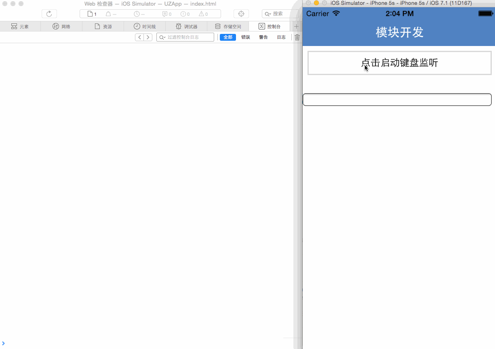
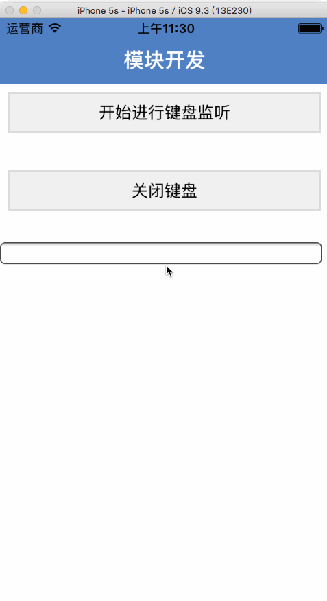

APICloude->键盘监听
支持IOS,Android平台
目的:
此模块的插件目的:在APICloude平台进行应用开发时,在input或text标签中进行文字输入时出现键盘遮挡或输入框未紧贴键盘上方位置
功能演示

加载模块
调用函数
进行接口监听,只需要调用一次即可,重复接收回调函数获取当前键盘的状态及高度返回值.
功能演示2(去工具栏)

工具栏默认是去掉的所以无需设置,只需要调用关闭键盘的使用方法
所使用方法全都介绍完了,您可以在APICloude 模块商店搜索(暂时还未上线) modulekeyboard ,有需要也可以点击右边QQ联系我 ====>